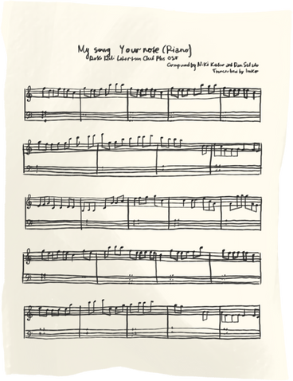
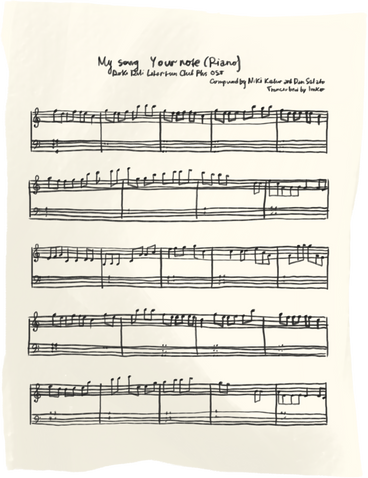

In this project, I intend to set up a Retrieval-Augmented Generation (RAG) system powered by a Chroma vector database and a Large Language Model (LLM).
Text embeddings were created from the plot descriptions of the IMDb dataset using sentence transformers from Hugging Face.
These embeddings were then loaded into a Chroma vector store.
Together with the LLM, they formed the RAG system for generating a curated binge-watching movie set.
 

In this project, I undertake several steps to develop an efficient system for recommending songs based on lyrical content. First, I load the lyrics of over 5 million songs. Then, I use transformers to chunk and encode the lyrics. Afterward, I set up vector databases to store the encoded lyrics. Finally, I retrieve similar songs based on lyrics similarity using cosine similarity. By leveraging these techniques, I aim to provide accurate and meaningful song recommendations based on the content of the lyrics.
To achieve this, I utilized several libraries: LangChain and LangChain Community for loading the data and chunking the lyrics, the GTE-large sentence transformers model for encoding, and Chroma for setting up vector databases.
In this project, I undertake several steps to develop an efficient system for recommending movies based on the plot description. First, I load the IMDb movie dataset containing over 10,000 movie plots. Unlike previous projects, no chunking of the data is required. Instead, I use the all-mpnet-base-v2 model for encoding the plots. After encoding, I set up vector databases to store the encoded plots. I would later go on to migrate the entire local chroma Database to a pinecone cloud vector database. Finally, I retrieve similar movies based on plot similarity using cosine similarity. By leveraging these techniques, I aim to provide accurate and meaningful movie recommendations based on the content of the plots.
To achieve this, I utilized several libraries: LangChain and LangChain Community for loading the data, the all-mpnet-base-v2 model for encoding, Chroma and Pinecone for setting up vector databases.

In this project, I utilized several key libraries to download the 2023 FA cup Final video from youtube, extract the audio, and transcribe the extracted audio. The libraries employed include:
yt_dlp, ffmpeg and OpenAI.
By integrating these tools, we aim to efficiently process and convert a sport event video content into textual format for LLM analysis.